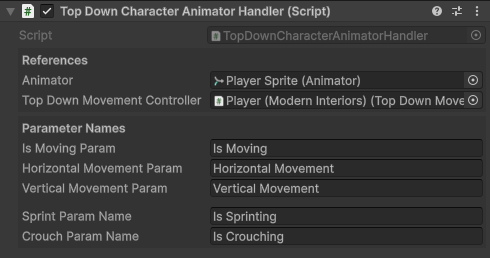
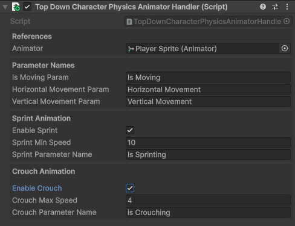

Character Usage
The BlazerTech Character Management System includes the runtime components needed to load, render, animate and control characters.
| Component Type | Purpose |
|---|---|
| Character Renderer components | Load and render characters. |
| Character Animator Handler component | Control specific paramters set in an Animator Controller used to properly animate a character. |
| Character Movement components | Handle player input and movement logic. |
The Character Shader
A shader is used to visually display a character over the Base Spritesheet.
Sprites from the Base Spritesheet assigned in a Character Type are rendered in a component such as a Sprite Renderer or used in an Animator Controller.
If a Unified Character is used, the shader takes the single spritesheet of the character and shows that over the Base Spritesheet.
If a Layered Character is used, the shader combines all layers into the final rendered character.
Note
If a Character Renderer component is used the shader will be applied automatically.
Character Renderer Components
Character Renderer components will load and display any character regardless of the type
Components
| Renderer Component | Used For |
|---|---|
| Layered Character Group Renderer | Load a saved Layered Character from a group. |
| Layered Character Template Renderer | Create and render a Layered Character from a template. |
| Unified Character Template Renderer | Create and render a Unified Character from a template. |
| Random Layered Character Renderer | Create a new Layered Character with completely random layer options. |
Character Renderer Core Fields
All Character Renderer components have the following fields.
References
| Field | Type | Description |
|---|---|---|
| Renderer | Renderer |
Reference to a Renderer component such as a Sprite Renderer. Used to apply character shader. |
| Set Animator Controller | Bool |
Automatically assigns the Animator Controller from the referenced Character Type. |
| Animator | Animator |
Reference to an Animator component to apply the animator controller. Only shown if Set Animator Controller is true. |
Loading Settings
| Field | Type | Description |
|---|---|---|
| Loading Mode | Enum |
Option to load character asynchronously or synchronously. |
| Load Character On Start | Bool |
If true the the character will be loaded when the Start method is called. |
Unified Character Template Renderer
- Component: UnifiedCharacterTemplateRenderer.
Requirements:
- A Unified Character Type.
- At least one Unified Character Template.
The Unified Character Template Renderer component renderers a Unified Character from a Unified Character Template.
Setup Steps:
- Add the component to a GameObject.
- Assign Renderer (Usually a Sprite Renderer).
- optionally assign Animator.
- Configure Loading Settings.
- Assign the Unified Character Template you want to use.
- Play your game and if Load Character On Start is enabled, your character will be displayed.
Layered Character Renderers
Layered Character Group Renderer
- Component: LayeredCharacterGroupRenderer.
Requirements:
- A Layered Character Type.
- At least one Layered Character saved in a group.
The Layered Character Group Renderer component renderers a previously saved Layered Character from a Character Group.
Setup Steps:
- Add the component to a GameObject.
- Assign Renderer (Usually a Sprite Renderer).
- optionally assign Animator.
- Configure Loading Settings.
- Assign the Character Type you want to load a character from.
- Select the Character Group (Primary, Flexible or Fixed) and configure parameters.
Character Groups
After a Character Type has been referenced, you can choose which group you want to load a Layered Character from:
| Group Type | Description |
|---|---|
| Primary Character Slot | A single character contained in the Character Type. No additional parameters required. |
| Flexible Group | A group of characters that can be added, removed, or edited at any time. |
| Fixed Group | A group with a preset number of characters. New characters cannot be added or removed after creation. |
If Flexible Group or Fixed Group is selected, the following parameters are required:
| Parameter | Type | Description |
|---|---|---|
| Character Group Name | String |
A unique name used to find the fixed or flexible group. |
| Character Load Method | Enum |
Determines how a character is selected from the group: - Character Name > Load a character by its saved name. - Character Index > Load a character by its index position in the group. - Randomized > Randomly load a character from the group. |
Layered Character Template Renderer
- Component: LayeredCharacterTemplateRenderer.
Requirements:
- A Layered Character Type.
- At least one Layered Character Template.
The Layered Character Template Renderer component renderers a Layered Character from a Layered Character Template.
Setup Steps:
- Add the component to a GameObject.
- Assign Renderer (Usually a Sprite Renderer).
- optionally assign Animator.
- Configure Loading Settings.
- Assign the Layered Character Template you want to use.
- Play your game and if Load Character On Start is enabled, your character will be displayed.
Random Layered Character Renderer
- Component: RandomLayeredCharacterRenderer.
Requirements:
The Random Layered Character Renderer component creates and renders a completely random Layered Character. A random option is chosen from every layer.
Setup Steps:
- Add the component to a GameObject.
- Assign Renderer (Usually a Sprite Renderer).
- optionally assign Animator.
- Configure Loading Settings.
- Assign the Layered Character Type you want to use.
- Play your game and if Load Character On Start is enabled, a new completely randomized character will be displayed.
Character Animator Handlers
Animator Handler components control parameters set within an Animator Controller.
All Animator Handler components require a reference to an Animator component.
Tip
An Animator Controller can be assigned to any Character Type and be automatically used a character of that type is used.
Top-Down Character Animator Handler
- Component: TopDownCharacterAnimatorHandler.
The Top-Down Character Animator Handler synces parameters in an Animator Controller to values within the Top Down Movement Controller.
Inspector Fields
References:
| Parameter | Type | Description |
|---|---|---|
| Animator | Animator |
The Animator component used to set parameters. |
| Movement Controller | TopDownMovementController |
The Top Down Movement Controller component used to listen for movement. |
Parameter Names:
| Parameter | Type | Description |
|---|---|---|
| Is Moving Param | Bool |
The Animator parameter name used to indicate whether the character is moving. Set to true when movement is detected. |
| Horizontal Movement Param | String |
The Animator parameter name for horizontal input.-1 when moving left and 1 when moving right. |
| Vertical Movement Param | String |
The Animator parameter name for vertical input.-1 when moving down and 1 when moving up. |
| Sprint Param | Bool |
The Animator parameter name used to indicate when the character is sprinting.True when sprinting, otherwise false.Only available when Sprint is enabled in the Top Down Movement Controller. |
| Crouch Param | Bool |
The Animator parameter name used to indicate when the character is crouching.True when crouched, otherwise false.Only available when Crouch is enabled in the Top Down Movement Controller. |
How it works:
- Reads movement and state data from the referenced Top Down Movement Controller.
- Updates Animator Controller paramters in-real time to reflect the character's state.
- Animator Controller uses those parameters to play specific animations.
Available Methods:
ChangeDirection(FourDirectional/EightDirectional): Immediately update the direction the character is facing.PlayAnimation(string): Play a specific animation or blend tree by state name.PlayDefaultAnimation(): Play the default animation state defined in the Animator Controller.

Top-Down Character Physics Animator Handler
- Component: TopDownCharacterPhysicsAnimatorHandler.
The Top-Down Character Physics Animator Handler is physics-driven.
Every fixed update the position of the game object the component is attached to is compared to it's possition last frame.
This is used to determine the direction the character is moving and speed the character is traveling at.
Inspector Fields
References:
| Parameter | Type | Description |
|---|---|---|
| Animator | Animator |
The Animator component used to set parameters. |
Parameter Names:
| Parameter | Type | Description |
|---|---|---|
| Is Moving Param | Bool |
The Animator parameter name used to indicate whether the character is moving. Set to true when movement is detected. |
| Horizontal Movement Param | String |
The Animator parameter name for horizontal input.-1 when moving left and 1 when moving right. |
| Vertical Movement Param | String |
The Animator parameter name for vertical input.-1 when moving down and 1 when moving up. |
Sprint Animation:
| Field | Type | Description |
|---|---|---|
| Enable Sprint | Bool |
If true, enables sprinting animations when speed is greater than Sprint Min Speed. |
| Sprint Min Speed | Float |
Minimum speed required to trigger sprint animation. |
| Sprint Parameter Name | String |
The Animator parameter name for the sprint state (default: "Is Sprinting"). |
Crouch Animation:
| Field | Type | Description |
|---|---|---|
| Enable Crouch | Bool |
If true, enables crouching animations when speed is less than Crouch Max Speed. |
| Crouch Max Speed | Float |
Maximum speed for crouch animations to be used. |
| Crouch Parameter Name | String |
The Animator parameter name for the crouch state (default: "Is Crouching"). |
How it works:
- Calculates movement each
FixedUpdate()by comparing current and previous positions. - Determines direction and speed, then updates Animator parameters.
- Optionally toggles sprint/crouch states when enabled.
- Animator Controller uses those parameters to play specific animations.
Available Methods:
ChangeDirection(FourDirectional/EightDirectional): Immediately update the direction the character is facing.PlayAnimation(string): Play a specific animation or blend tree by state name.PlayDefaultAnimation(): Play the default animation state defined in the Animator Controller.

Important
Due to the nature of how the Top-Down Character Physics Animator Handler works, crouch animations can only be played when the character is moving.
Character Controllers
Character Controllers are included components which let the player control the movement of a game object.
When used with a Character Animator Hander you can both control and aniamte any character with ease.
Top Down Movement Controller
- Component: TopDownMovementController.
The Top Down Movement Controller handles player movement for top-down 2d games where there are 4 directions the player can move (Left, right, up, down).
Input Configuration
This component uses Unitys New Input System. Every input action is configurable.
Input Actions are used to easily modify what inputs are used for each action.
Input Actions
| Input Action | Type | Usage |
|---|---|---|
| Move Action | Vector2 |
The input action used to control player movement along the X and Y axes. |
| Sprint Action | Button |
The input action used to let the player sprint. (If enabled) |
| Crouch Action | Button |
The input action used to let the player crouch. (If enabled) |
A default Input Action asset is included under the /Input Actions subfolder.
This asset contains the default input actions for moving, sprinting and crouching.
Auto Enable Actions
If Auto Enable Actions is checked, the component automatically enables and disables the assigned input actions when the GameObject is enabled or disabled.
This is useful when not using a PlayerInput component or a project‑wide input actions asset that handles enabling automatically.
Movement Settings
| Field | Type | Description |
|---|---|---|
| Move Speed | Float |
Base walk speed (Default: 6.5). |
| Can Move | Bool |
Toggles whether the character can currently move. Can be changed via script or in the inspector. |
Sprinting & Crouching
Optional sprinting and crouching systems can be toggled on via their corresponding booleans. Each system has customizable speed and button mode options.
| Field | Type | Description |
|---|---|---|
| Speed | Float |
Movement speed while sprint or crouching. |
| Mode | Enum |
Determines whether the button must be held or toggled. (Default: Hold) |
References
| Reference | Type | Description |
|---|---|---|
| Rigidbody2D | Rigidbody2D |
Required reference used for applying movement. |
Runtime Properties
| Property | Type | Description |
|---|---|---|
| IsMoving | bool |
True if the player is currently moving. |
| IsSprinting | bool |
True if the player is currently sprinting. |
| IsCrouching | bool |
True if the player is currently crouching. |
| Movement | Vector2 |
Current normalized movement direction. |
Tip
Designed to be used along a Character Animator Handler component. When used together they provide both character movement and animation functionality.